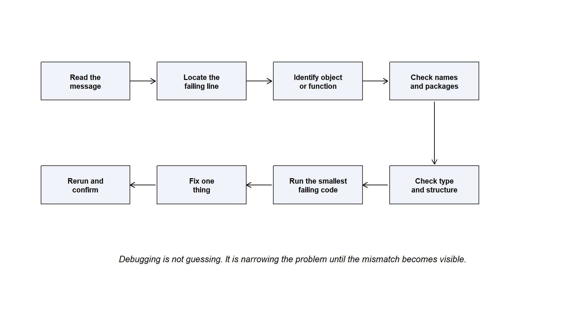

Code
clean_text <- function(value) {
tolower(trimws(value))
}
clean_text(" Nigeria ")Leo has just learned something powerful.
He no longer has to repeat the same action again and again. If a rule matters, he can give it a name. If a cleaning step appears in several places, he can wrap it inside a function. If a calculation keeps returning to the script, he can turn it into a reusable action.
That feels like progress.
Then he writes this:
clean_text <- function(value) {
tolower(trimws(value))
}
clean_text(" Nigeria ")The code works.
So he becomes bolder.
clean_text <- function(value) {
tolower(trimws(value))
}
country <- clean_text(" Nigeria ")
background <- clean_text(" Excel ")
r_experience_level <- clean_text(beginner)Then R answers:
Error: object 'beginner' not foundLeo stares at the screen.
The function worked before. The idea is correct. The code even looks familiar. But R has stopped.
This is the point where many beginners feel that R has become hostile. It has not. R is doing something more precise than that. It is telling Leo that the conversation broke at a specific place.
R was not given the text "beginner". It was given a name, beginner, and no object with that name exists.
The problem is not that Leo is bad at R. The problem is that R received something different from what Leo intended.
That difference is where debugging begins.
Chapter 10 starts from a practical truth every serious R learner must eventually accept:
Code that breaks is not failed learning. It is information waiting to be interpreted.
In this chapter, Leo learns how to read R errors calmly, distinguish errors from warnings and messages, diagnose common beginner problems, test code in smaller pieces, debug pipes and user-defined functions, and close Part 2 with a practical framework for repairing code when the conversation with R breaks down.
Chapter 9 changed Leo’s relationship with R.
Before Chapter 9, functions were mostly tools other people had already written. Leo used mean(), length(), str(), tolower(), and trimws() as ready-made actions. After Chapter 9, he learned that he could name actions of his own.
That is a major step.
A user-defined function is more than a convenience. It is a sign that Leo is beginning to think like an analyst who wants reusable logic, not scattered repetition.
But reusable logic creates a new responsibility.
If a repeated line of code contains a problem, the problem may appear once. If a function contains a problem, the problem can travel everywhere the function is used. That is not a reason to fear functions. It is a reason to learn how to diagnose them.
Part 2 has taught Leo the language of R: values, types, structures, syntax, logic, operators, built-in functions, and user-defined functions. Chapter 10 adds the missing skill that makes the language usable in real life.
Leo must learn what to do when R answers back with an error.
An error message is not R refusing to help.
It is R telling Leo where the conversation broke down.
That sentence matters because it changes the emotional posture of debugging. When Leo sees an error, the first task is not to blame himself, blame R, or paste the whole script into a search engine. The first task is to ask a smaller, calmer question:
What did R receive, and what did R expect?
Most beginner errors come from a mismatch between intention and instruction.
Leo intended to give R a text value, but wrote an unquoted object name. He intended to call a function, but misspelled it. He intended to use a column, but the column name was different from what he remembered. He intended to calculate with numbers, but one value was stored as text. He intended to use a package function, but the package had not been loaded.
Debugging is the work of finding that mismatch.
Do not treat an error as a verdict. Treat it as a clue. The question is not “Why is R doing this to me?” The better question is “What exactly did R receive, and where did that differ from what I intended?”
R does not communicate problems in only one way.
Sometimes R stops. Sometimes it continues but warns Leo. Sometimes it simply provides information about what happened. These signals are related, but they are not identical.
| Signal | What it means | What Leo should do first | Example |
|---|---|---|---|
| Error | R cannot continue with the instruction as written. | Read the message, identify the object or function mentioned, and locate the line that failed. | Error: object 'x' not found |
| Warning | R completed something, but there may be a problem with the result. | Do not ignore it. Check whether the result still means what Leo thinks it means. | NAs introduced by coercion |
| Message | R is giving information about what it did or how something was loaded. | Read it, but do not panic. Decide whether it requires action. | Package startup messages |
As shown in Table tbl-signals, an error is usually the strongest signal because it stops the code. A warning is more subtle because the code may still run. That can be more dangerous than an error if Leo ignores it and trusts a damaged result.
Consider this example:
as.numeric(c("72", "81", "not available", "90"))R may return numeric values but warn that something could not be converted. The code did not completely fail, but the result contains a missing value introduced during conversion.
A warning says: “I did something, but you need to check whether the result is still safe.”
A message says: “Here is information.”
When Leo loads a package, R may print messages. Those messages may mention conflicts or attached packages. Chapter 11 will explain packages more fully. For now, Leo only needs the debugging habit: read the signal before reacting to it.
Debugging becomes easier when Leo follows a method.
A method keeps him from jumping randomly between guesses. It also keeps him from changing five things at once, which often creates a second problem before the first one is understood.
A practical debugging framework looks like this:
1. Read the message slowly.
2. Locate the failing line.
3. Identify the object, function, or argument involved.
4. Check spelling, case, and assignment.
5. Check whether the needed package or namespace is available.
6. Check the data type and structure.
7. Run the smallest failing piece.
8. Fix one thing.
9. Rerun and confirm.This is not a ritual. It is a disciplined path from confusion to evidence.
The figure below gives Leo a simple map of the process.

As shown in Figure fig-debugging-framework, the process does not begin with fixing. It begins with reading. A rushed fix can hide the real problem. A careful diagnosis makes the fix smaller and safer.
When code fails, do not immediately rewrite the whole script. First, copy the smallest part that fails and run only that part. A smaller problem is easier to see.
Many beginners read only the first word:
ErrorThen they stop thinking.
Leo needs to read beyond the emotional word. The message often contains the most useful clue.
For example:
Error: object 'project_scores' not foundThis message is not vague. It says R looked for an object called project_scores and could not find it.
Possible reasons include:
That is already useful.
The message has narrowed the search.
In a short script, the failing line may be obvious. In a longer script, Leo may not know exactly where the problem happened.
A good habit is to run code in sections. If a long script fails, Leo should avoid changing lines at random. He should find the first line that fails.
In RStudio, running small chunks or selected lines can help. In a Quarto document, chunk boundaries also help. If a chunk fails, Leo can test the code inside that chunk piece by piece.
The question is:
Which exact instruction made R stop?
Until Leo knows that, he is debugging the whole script at once. That is too large.
One of the most common R errors is:
Error: object 'x' not foundThis error usually means that R was given a name that does not exist in the current place where R is looking.
Example:
project_scoreIf no object called project_score exists in the current environment, R cannot guess what Leo meant.
A beginner may think, “But the column exists in my data frame.” That may be true. But a column inside a data frame is not always available as a standalone object.
For example:
df_learners$project_scoreis different from:
project_scoreThe first tells R to look inside df_learners. The second asks R to find an object called project_score in the current environment.
Leo can inspect what objects exist:
ls()He can inspect the names inside a data frame:
names(df_learners)If he is working with a data frame, this question matters:
Is this name an object by itself, or is it a column inside another object?
That question solves many early errors.
R is case-sensitive.
These are not the same object:
project_scores
Project_scores
project_ScoresA human reader may see them as almost identical. R does not.
This is why spelling and case should be checked before deeper explanations are invented. Sometimes the problem is not a complex programming issue. Sometimes the problem is one capital letter.
Consider this:
study_hours <- c(4, 6, 3, 8)
mean(study_Hours)R will not treat study_hours and study_Hours as the same name.
A simple naming habit helps: use lower case, meaningful names, and underscores.
study_hours
project_scores
clean_countryNames should be boring enough to type correctly.
Do not assume that a name is correct because it looks familiar. R cares about exact spelling. score_gap, score_Gap, and scoregap are three different names.
Sometimes the object is missing because Leo did not assign it correctly.
Assignment creates a name:
project_scores <- c(72, 81, 65, 90)If Leo only writes:
c(72, 81, 65, 90)R prints the values, but it does not store them under the name project_scores.
Later, this fails:
mean(project_scores)because project_scores was never created.
The debugging question is:
Did I create the object before using it?
Order matters. R reads code from top to bottom during normal execution. If an object is used before it is created, R cannot know about it.
This is also why restarting R and rerunning the script from the top is useful. It tests whether the script creates everything it depends on.
A script that only works because Leo created hidden objects earlier in the session is fragile. A reliable script can rebuild its own objects in order.
A syntax error means R cannot read the code as a valid instruction.
A common signal is:
Error: unexpected symbolExample:
mean project_scoresLeo may have intended:
mean(project_scores)The first version is missing parentheses. R does not see a valid function call.
Another common issue is a missing comma:
data.frame(
learner_id = c(1, 2, 3)
project_score = c(72, 81, 90)
)R expects a comma between arguments:
data.frame(
learner_id = c(1, 2, 3),
project_score = c(72, 81, 90)
)Syntax errors are often about punctuation: parentheses, commas, quotation marks, brackets, and operators.
Leo should not treat punctuation as decoration. In R, punctuation carries structure.
Functions expect inputs in particular places.
A function call has a name, parentheses, and usually arguments:
round(3.14159, digits = 2)If Leo gives a function the wrong kind of input, leaves out an input, or misspells an argument, the function may fail.
Example:
round("three", digits = 2)The issue is not that round() is broken. The issue is that text cannot be rounded as a number.
A useful debugging question is:
What kind of input does this function expect?
Leo can inspect help when needed:
?roundHe can also test with a very simple input:
round(3.14159, digits = 2)If the simple input works and the real input fails, the problem is probably in the real input, not in the function itself.
Some errors happen because a value looks right to Leo but has the wrong type inside R.
Example:
score <- "72"
score + 5R may respond with:
Error in score + 5 : non-numeric argument to binary operatorTo Leo, "72" looks like a number. To R, it is character text because it is inside quotation marks.
The debugging question is:
What type is this object?
Leo can check:
typeof(score)
class(score)
str(score)Then he can decide whether conversion is appropriate:
score_num <- as.numeric(score)
score_num + 5But conversion should not be automatic or careless. If text values include "not available" or "missing", conversion can introduce NA values. That may be correct, but Leo should notice it.
Types are not cosmetic. Types determine what R can safely do.
Sometimes the type is not the only issue. The structure is wrong.
A vector, list, matrix, and data frame do not behave the same way. A column may be inside a data frame. A value may be inside a list. A row may not exist. An index may be too large.
A common error is:
subscript out of boundsThis often means Leo asked for an element that does not exist.
Example:
scores <- c(72, 81, 90)
scores[4]For vectors, this particular request returns NA, but similar out-of-range requests in matrices, arrays, or lists can produce errors. The principle is the same: Leo asked for a position outside the available structure.
A common list example:
learner <- list(
name = "Leo",
score = 82
)
learner[[3]]There is no third element.
Before extracting, Leo should inspect:
str(learner)
length(learner)
names(learner)The debugging question is:
What is the structure of this object, and does the part I am asking for exist?
Another common problem appears when Leo tries to use a column name that does not exist.
Example:
df_learners <- data.frame(
learner_id = c(1, 2, 3),
project_score = c(72, 81, 90)
)
df_learners$project_scoresThe actual column is project_score, not project_scores.
With $, R may return NULL rather than a loud error. That can be dangerous because the code does not always fail immediately.
Leo should inspect the names:
names(df_learners)In later chapters, this habit becomes essential. Imported data may have spaces, capital letters, unexpected punctuation, or names that differ from what Leo remembers.
For now, the rule is simple:
Before using a column name, inspect the column names.
Sometimes R cannot find a function because the function does not belong to base R or because the package that contains it has not been loaded.
A common message is:
Error: could not find function "filter"This may happen if Leo tries to use a function from a package that is not available in the current session.
For example:
filter(df_learners, project_score >= 80)If the relevant package is not loaded, R may not know which filter() Leo means.
One solution is to load the package:
library(dplyr)Another is to use the namespace directly:
dplyr::filter(df_learners, project_score >= 80)This chapter will not teach packages in full. That is the job of Chapter 11. Here, Leo only needs one debugging insight:
If R cannot find a function, check spelling first, then check whether the function comes from a package.
This prepares him for the next chapter, where packages become a central workflow tool.
The pipe is useful because it lets Leo read a sequence of actions from left to right.
But a pipe can also hide where a problem begins if Leo runs a long chain all at once.
Example:
df_learners |>
dplyr::filter(project_score >= 80) |>
dplyr::mutate(score_gap = project_score - pre_assessment_score) |>
dplyr::summarise(mean_gap = mean(score_gap, na.rm = TRUE))If this fails, Leo should not stare at the whole pipe as one mystery. He should build it one step at a time.
First:
df_learners |>
dplyr::filter(project_score >= 80)Then:
df_learners |>
dplyr::filter(project_score >= 80) |>
dplyr::mutate(score_gap = project_score - pre_assessment_score)Then:
df_learners |>
dplyr::filter(project_score >= 80) |>
dplyr::mutate(score_gap = project_score - pre_assessment_score) |>
dplyr::summarise(mean_gap = mean(score_gap, na.rm = TRUE))This approach narrows the failure.
A pipe is a chain. To debug a chain, test the links.
When a pipe fails, run the first line, then the first two lines, then the first three. The first step that fails is the place to inspect.
Chapter 9 taught Leo to write functions. Chapter 10 now teaches him how to test them.
Suppose Leo writes:
score_gap <- function(project_score, pre_score) {
project_score - pre_assessment_score
}Then he runs:
score_gap(85, 70)R may complain that pre_assessment_score is not found.
Why? The function argument is called pre_score, but inside the function Leo used pre_assessment_score.
A corrected version is:
score_gap <- function(project_score, pre_score) {
project_score - pre_score
}
score_gap(85, 70)When debugging a function, Leo should ask:
Are the argument names consistent?
Does the function use objects that exist inside the function?
Have I tested it with one simple input?
Does the output match what I expected?The best first test for a function is not the full dataset. It is a simple case Leo can check in his head.
score_gap(85, 70)The expected answer is 15. If that fails, the function needs attention before it is used in a larger workflow.
This is one of the most important debugging habits in the book.
When a script fails, Leo should not bring the whole script to the problem. He should reduce the problem until the failure is small enough to understand.
Suppose this fails:
df_learners |>
dplyr::filter(country == "Nigeria") |>
dplyr::mutate(score_gap = project_score - pre_assessment_score) |>
dplyr::group_by(background) |>
dplyr::summarise(mean_gap = mean(score_gap, na.rm = TRUE))Leo can ask:
Does df_learners exist?
Does country exist?
Does project_score exist?
Does pre_assessment_score exist?
Does the filter step work alone?
Does the mutate step work after filtering?He can inspect:
names(df_learners)
str(df_learners)Then run one part:
df_learners |>
dplyr::filter(country == "Nigeria")A small failing example is not a beginner trick. It is professional discipline.
It also helps when asking for help. A person who can show a small failing example is much easier to help than a person who only says, “My code does not work.”
In R communities, this is often called creating a reproducible example, or reprex. Leo does not need to master the full practice now. He only needs the habit of making the problem smaller and clearer.
A common beginner response to errors is to change many things at once.
Leo changes an object name, moves a line, adds a package, edits a function, and reruns the script. The error changes. Now he does not know which change mattered.
A calmer method is:
Change one thing.
Run again.
Observe what changed.
Then decide the next step.This is slower for one minute and faster for the whole project.
Debugging is not only about finding the fix. It is about preserving evidence while finding the fix.
The table below is not a replacement for the framework. It is a quick reference for common signals Leo is likely to meet.
| Error or signal | Usual meaning | First question Leo should ask |
|---|---|---|
object 'x' not found |
R cannot find an object with that name. | Did I create the object before using it, and is the spelling exact? |
could not find function |
The function name is unknown in the current session. | Did I spell the function correctly, and does it come from a package? |
unexpected symbol |
R cannot parse the instruction. | Am I missing a comma, parenthesis, operator, or quotation mark? |
non-numeric argument to binary operator |
A calculation used something that is not numeric. | Is one of the values stored as text or another type? |
subscript out of bounds |
Code requested a position or element that does not exist. | What is the length, dimension, or structure of the object? |
object of type 'closure' is not subsettable |
Code is trying to subset a function as if it were data. | Did I use the same name for a function and an object, or forget parentheses? |
NAs introduced by coercion |
R converted values and created missing values where conversion failed. | Which values could not be converted, and is that expected? |
| Replacement length mismatch | Code tried to replace values with a vector of the wrong length. | How many values am I replacing, and how many replacement values did I provide? |
Table tbl-common-errors is deliberately practical. It does not ask Leo to memorise every possible cause. It gives him a first question. Debugging begins with better questions.
object of type 'closure' is not subsettableThis error looks strange, so it deserves a short explanation.
In R, a function is sometimes described internally as a closure. If Leo tries to subset a function as though it were a vector or data frame, R may complain.
Example:
mean[1]mean is a function. Leo probably meant to call it with parentheses:
mean(c(72, 81, 90))Another common cause is naming an object in a way that conflicts with a function name.
data <- data.frame(score = c(72, 81, 90))Using data as an object name can be confusing because data() is also a function. This does not always break code, but it can make errors harder to interpret.
The practical habit is simple: choose clear object names and remember the difference between calling a function with () and extracting from an object with [], [[ ]], or $.
traceback()Sometimes an error comes from a function calling another function inside it. The visible error may not show the whole path.
Base R provides:
traceback()This can show the sequence of calls that led to the last error.
For many beginners, traceback() output may look dense. Leo does not need to master it now. He only needs to know that it exists and that it can sometimes help locate where an error came from.
Some tidyverse workflows also provide richer error traces through tools such as rlang::last_trace(). That can be useful later, especially when working with packages. But the beginner method remains the same: read the message, locate the failing step, inspect the object, and reduce the problem.
Before searching online or asking someone else, Leo can walk through this checklist:
1. Did I read the full error, warning, or message?
2. Which exact line failed?
3. Which object or function is mentioned?
4. Does the object exist?
5. Is the spelling and capitalisation exact?
6. Did I create the object before using it?
7. Is the function name correct?
8. Does the function come from a package?
9. Is the package loaded or is the namespace explicit?
10. What type is the object?
11. What structure does the object have?
12. Can I run a smaller version of the failing code?
13. Did I change only one thing before rerunning?
14. Did the fix actually solve the original problem?This checklist is not meant to slow Leo down forever. With practice, these questions become automatic.
This short cheat sheet is for quick memory.
object not found
→ Check spelling, case, assignment, and whether the object exists.
could not find function
→ Check spelling, package loading, and package::function().
unexpected symbol
→ Check commas, parentheses, quotation marks, and operators.
non-numeric argument
→ Check type with str(), typeof(), or class().
subscript out of bounds
→ Check length(), dim(), names(), and str().
NAs introduced by coercion
→ Check which values failed conversion.
pipe fails
→ Run the pipe one step at a time.
function fails
→ Test the function with one simple input.
warning appears
→ Inspect the result before trusting it.
message appears
→ Read it, then decide whether action is needed.The goal is not to know every answer immediately. The goal is to know the first sensible move.
Create a simple object:
project_scores <- c(72, 81, 65, 90)Now intentionally run this:
mean(project_score)Ask:
What object did R look for?
What object actually exists?
What is the spelling difference?Now correct it:
mean(project_scores)Next, try this:
score <- "72"
score + 5Ask:
Why does this fail?
What type is score?Check:
str(score)Then convert carefully:
score_num <- as.numeric(score)
score_num + 5The aim is not to create errors for entertainment. The aim is to recognise patterns before they appear in a larger workflow.
Use this small data frame:
df_learners <- data.frame(
learner_id = c(1, 2, 3, 4),
country = c("Nigeria", "Ghana", "Kenya", "Nigeria"),
project_score = c(72, 81, 65, 90),
pre_assessment_score = c(60, 70, 58, 75)
)Now run this code and debug it step by step:
df_learners |>
dplyr::filter(country == "Nigeria") |>
dplyr::mutate(score_gap = project_scores - pre_assessment_score) |>
dplyr::summarise(mean_gap = mean(score_gap, na.rm = TRUE))The problem is in this part:
project_scoresThe column is called:
project_scoreA corrected version is:
df_learners |>
dplyr::filter(country == "Nigeria") |>
dplyr::mutate(score_gap = project_score - pre_assessment_score) |>
dplyr::summarise(mean_gap = mean(score_gap, na.rm = TRUE))To debug the pipe, Leo should run:
df_learners |>
dplyr::filter(country == "Nigeria")Then:
df_learners |>
dplyr::filter(country == "Nigeria") |>
dplyr::mutate(score_gap = project_score - pre_assessment_score)Then the full version.
That is the framework in action.
Leo has learned that debugging is not a side issue. It is part of becoming independent in R.
The main ideas are:
The lightbulb remains:
An error message is not R refusing to help. It is R telling Leo where the conversation broke down.
Leo writes:
When R gives me an error, I should not panic. I should read it as a signal.
He adds:
My first question is not “Why is R broken?” My first question is “What did R receive, and what did it expect?”
Then he writes:
I should debug small. Run the smallest failing code. Fix one thing. Rerun. Confirm.
One final note feels especially important:
If I can debug, I am no longer dependent on perfect copied code. I can repair my own work.
That is the real shift.
Error
A signal that R cannot continue with the instruction as written.
Warning
A signal that R completed an action, but the result may need inspection.
Message
Information printed by R or a package about what happened.
Debugging
The process of finding and fixing the mismatch between what the user intended and what R received.
Object
A named value, vector, data frame, function, or other structure stored in R.
Function
A named action that takes inputs, performs work, and usually returns output.
Argument
An input given to a function.
Package
A collection of functions and resources that extends what R can do.
Namespace
The place where a package keeps its functions and objects.
Data type
The kind of value R is working with, such as numeric, character, logical, or date.
Structure
The arrangement of values inside an object, such as vector, list, matrix, or data frame.
Pipeline
A sequence of operations connected by a pipe.
Reprex
A small reproducible example that shows a problem clearly enough for another person to understand and test.
Trace
A record of function calls that led to an error.
By the end of this chapter, Leo can:
These are not minor skills.
They are the habits that help Leo move from hoping code works to understanding why it does or does not work.
Part 2 began with the language of R.
Leo learned that syntax is not decoration. It is structure. He learned that logic helps R make decisions. He learned that functions are named actions. He learned that he can create functions of his own when repeated logic deserves a name.
Chapter 10 adds the final maturity step.
Leo now knows that writing R is not only about producing correct code on the first attempt. It is also about repairing code when the instruction, object, function, type, structure, or package context is wrong.
That matters because real analysis rarely unfolds perfectly.
A learner who cannot debug remains dependent on luck, copying, and external rescue. A learner who can debug begins to gain control.
Part 2 has therefore done more than teach Leo how R thinks and speaks. It has taught him how to continue the conversation when it breaks.
Leo is now ready to leave isolated language lessons and enter larger workflows.
But larger workflows need more than base R. They need tools for importing data, shaping data, visualising patterns, working with dates and text, and making results reproducible. Some tools are already built into R. Others come from packages.
Chapter 11 begins there.
It shows how packages extend R’s working system, how those tools enter a session, why installing and loading are different, and why reproducible analysis depends on knowing which tools are being used.
Debugging has prepared Leo for that move. Missing packages, unloaded packages, function conflicts, and namespace problems are all easier to face when he already knows how to read errors as signals.
Leo now knows how to repair the conversation.
Next, he learns how R gains new tools without losing workflow control.